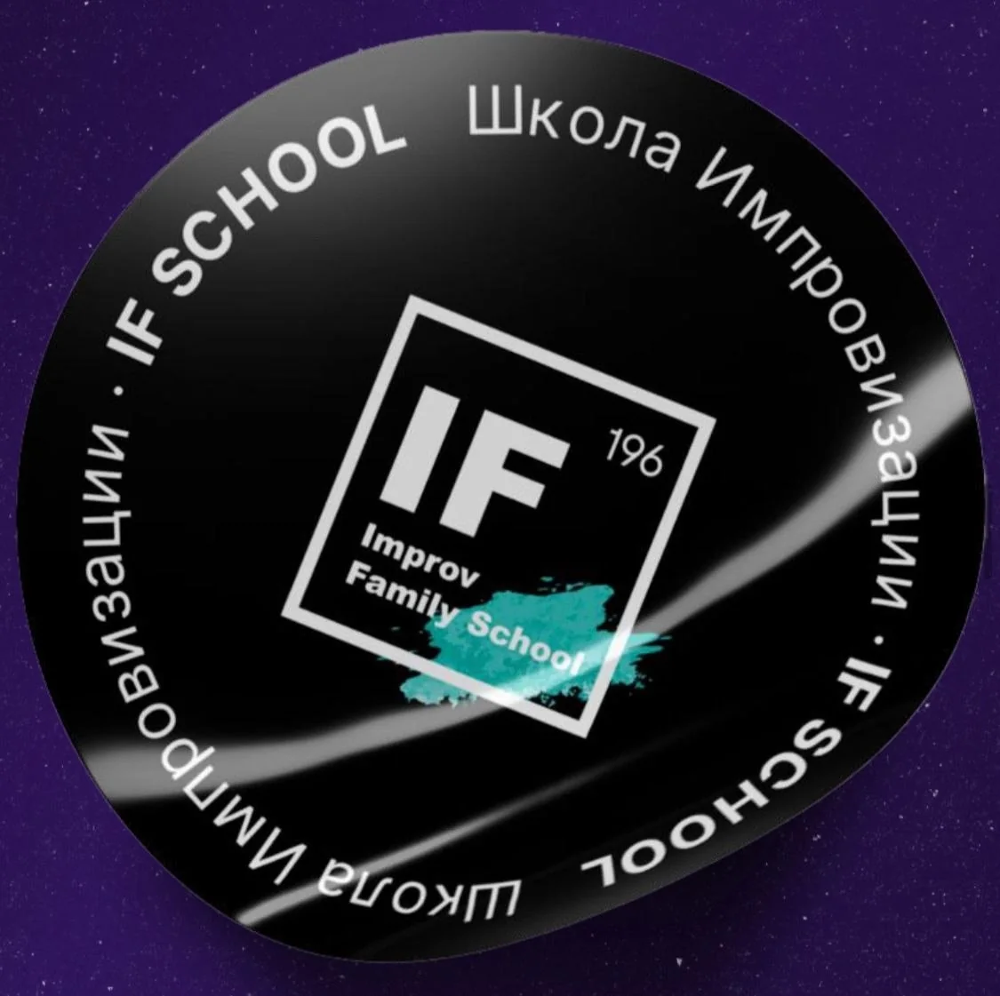
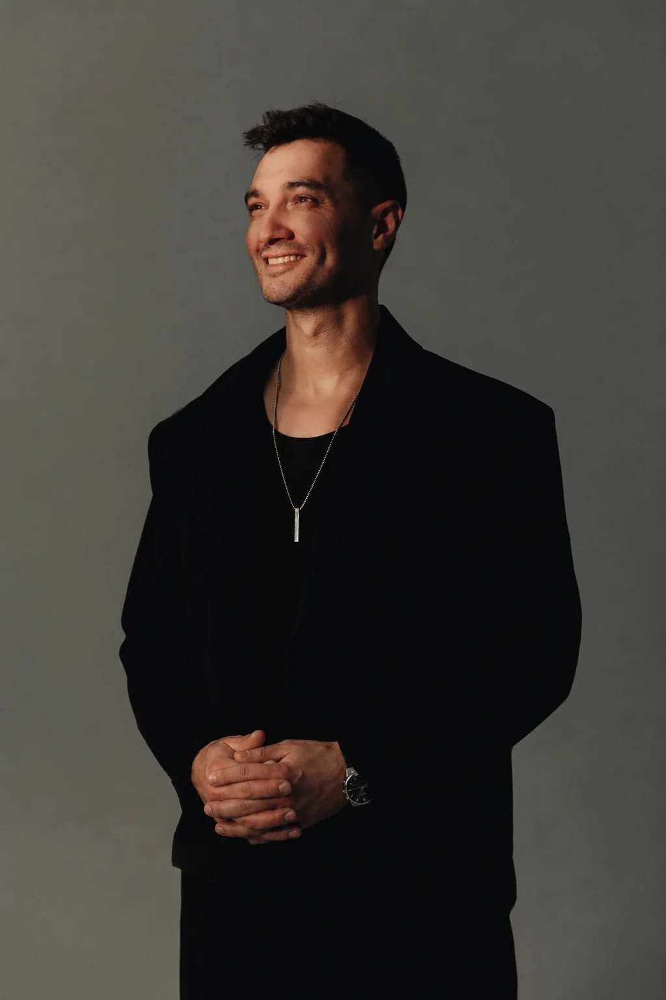
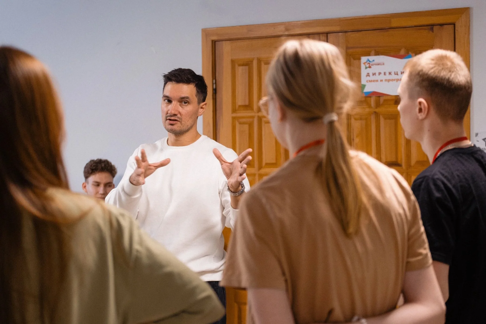
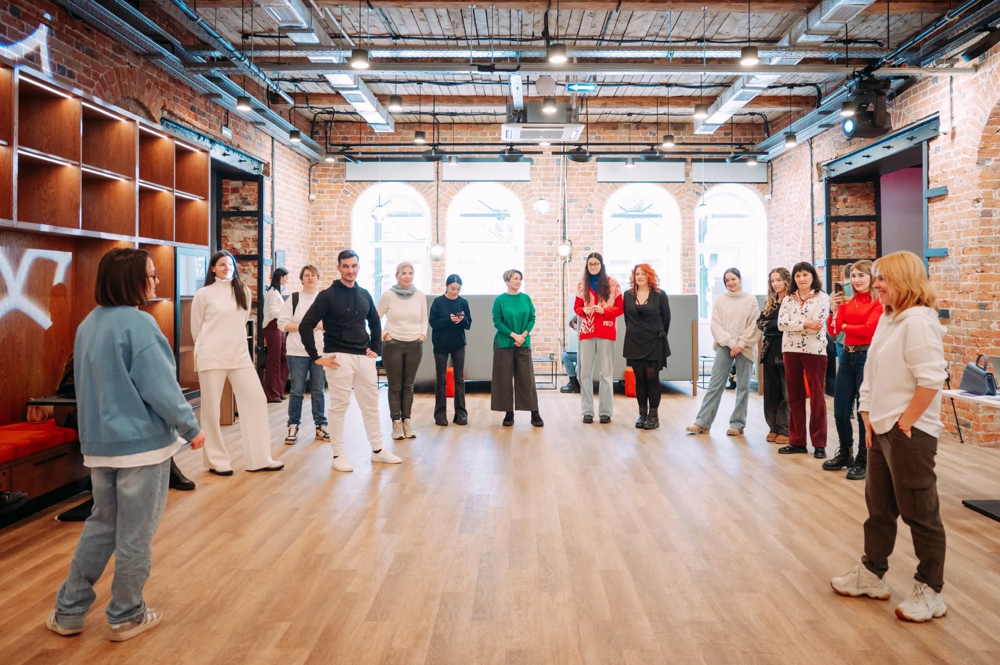
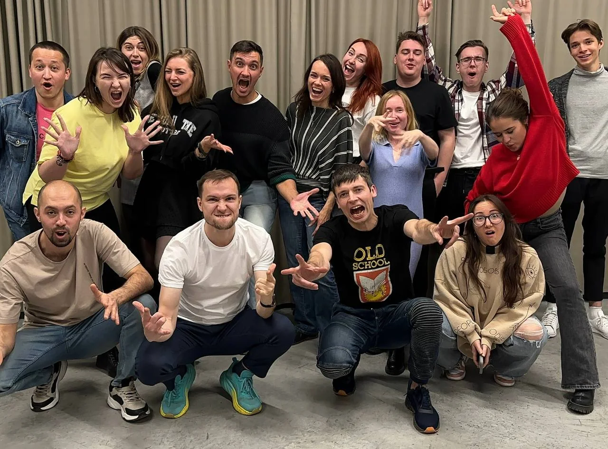
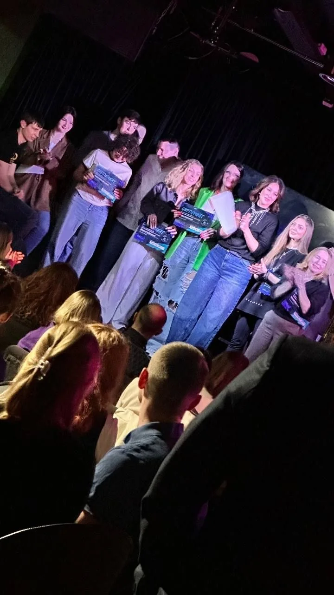
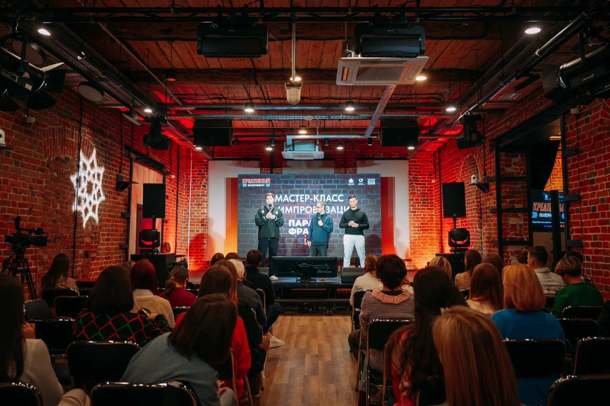

Теряешься
Когда ситуация идёт не по плану или на тебя внезапно переключается внимание.
Практический курс импровизации для жизни и сцены
Через занятия импровизацией учимся быстрее реагировать, меньше зависать, слышать собеседника, свободнее чувствовать себя перед людьми и находить смешное без заготовок.
Весь курс9 занятий × 3 часа + итоговое выступление

IF School
Юра Пинаев • преподаватель курсаЗнакомо?
Когда ситуация идёт не по плану или на тебя внезапно переключается внимание.
О том, что сказать, как выглядишь и правильно ли сейчас реагируешь.
Перед людьми, камерой, аудиторией — и просто в обычном разговоре.
Но без необходимости постоянно сочинять шутки и выдавать панчлайны.
Иногда проще промолчать, чем рискнуть ошибиться.
Несколько часов в неделю делать что-то настоящее вместе с другими людьми.
Импровизация тренирует не умение выдавать остроумные реплики по команде, а способность слышать, реагировать, принимать происходящее и двигаться дальше, даже когда заранее не знаешь, что будет.
Как проходит обучение
Минимум лекций. Упражнения, сцены, работа в парах и всей группой. В группе 10–12 человек, поэтому каждый работает много.
Видео с занятия
Не рекламная постановка. Реальная работа в группе: участники пробуют, реагируют и постепенно перестают контролировать каждый шаг.



Ещё один фрагмент реального занятия.
Сценический опыт преподавателя тоже становится материалом курса.
Курс заканчивается не зачётом, а реальным выходом к зрителям.
Программа курса
Это не набор импровизационных игр. Каждое занятие посвящено отдельному навыку. Мы тренируем его в упражнениях и сценах, соединяем навыки между собой — и в конце собираем всё в живое выступление.
Учимся не замирать после ошибки, а использовать её как новый ход.
Учимся слышать партнёра и строить сцену из того, что уже произошло.
Тренируем способность начинать без готового плана и развивать идею по ходу.
Учимся отвечать на происходящее живой реакцией вместо поиска «правильной» реплики.
Замечаем необычное, развиваем его и превращаем в комедийный материал.
Работаем с телом, голосом, статусом и поведением, чтобы быстро создавать яркий образ.
Тренируем реакцию, когда на тебя смотрят, ждут ответа или ситуация идёт не по плану.
Учимся держать внимание, работать с аудиторией и оставаться в живом контакте.
Пробуем сочинять и исполнять музыку и песни прямо в моменте.
Финал курса
На итоговом выступлении собираем всё вместе: выходим без готового сценария, слышим партнёров, принимаем неожиданность и продолжаем. Становиться профессиональным артистом после курса не обязательно.
А ещё это самый наглядный способ увидеть, насколько далеко группа ушла от первого занятия.


Кто ведёт
Я импровизатор, музыкант, преподаватель и сооснователь True Men Show.
В импровизации я с 2018 года. Начал как пианист и музыкальный импровизатор шоу «Пара Фраз» — одного из ведущих импровизационных шоу Урала, которое с 2018 по 2024 год работало совместно с Андреем Рожковым.
С 2022 года занимаюсь комедийной импровизацией. Изучаю американскую школу импрова, профессиональную литературу и методики; для внутренней работы перевёл UCB Comedy Improvisation Manual.
В 2024 году мы с Павлом Кондратьевым создали True Men Show. Тогда же я начал преподавать импровизацию в IF School. Провёл полноценный курс, регулярные тренировки и занятия — через них прошло более 50 человек.
Четыре года я проводил мастер-классы по импровизации для студентов УрФУ. Также проводил мастер-классы для предпринимателей при поддержке Свердловского фонда поддержки предпринимателей и «Домны».
Музыкой занимаюсь с детства: музыкальная школа, фортепиано, вокал; дополнительно обучался по методике Brett Manning.
Подход
Мне стало тесно в импровизации, которая превращается в соревнование: кто быстрее выдаст остроумную реплику.
В американской комедийной импровизации я увидел другой подход. Персонаж не обязан непрерывно шутить. Он может быть серьёзным, странным, уязвимым, самоуверенным или испуганным.
Он живёт внутри ситуации — и именно из поведения, отношений и собственной логики постепенно появляется комедия.
Мне интересна импровизация не как набор шуток, а как полноценное проживание ситуации.
После курса
Ниже — фрагменты. Нажми на скриншот, чтобы открыть оригинальное сообщение целиком.
«Во второй половине уже ржал человек, который сначала сидел с видом: “ну что за самодеятельность”».
После выпускного шоу«Однозначно хочу продолжать заниматься… Спасибо Юра за то, что передал нам частичку себя, своих знаний и опыта».
Вера, участница курса«Наш курс в нашей офигенной тёплой дружной компании — позади… Вместе МЫ — это такаяааая энергетика».
Мария, участница курсаФормат и стоимость
Пробное занятие
Первое занятие можно посетить как пробное за 700 ₽. Если после занятия решаете продолжить обучение, 700 ₽ входят в общую стоимость курса.
Екатеринбург, Малышева, 36, офис 336.
Полный курс
После пробного к доплате: 17 200 ₽. Можно платить частями.
Занятия: по вторникам, 19:00–22:00. Никаких обязательств покупать курс после пробного занятия нет.
Частые вопросы
Да. Курс рассчитан в том числе на людей без сценического опыта.
Это не проблема. Мы не начинаем с требования «придумай шутку».
Нагрузка растёт постепенно. Никого не выталкивают одного перед большой аудиторией на первом занятии.
Нет. Для занятия по музыкальной импровизации вокальный опыт не требуется.
И не надо. Навыки курса работают в общении, работе, публичных выступлениях, съёмках и неожиданных ситуациях.
Да. Схему платежей согласуем после записи.
Первое занятие — пробное
Старт курса — со следующего вторника. Оставь заявку. Юра свяжется с тобой, пришлёт информацию об оплате и точном месте проведения.
Запись занимает меньше минуты
Открыть Яндекс ФормуФорма откроется в новой вкладке. После отправки Юра сам свяжется с тобой и пришлёт оплату и адрес.
Старт курса — со следующего вторника.
Занятия: по вторникам, 19:00–22:00. Первое пробное — 700 ₽.
Екатеринбург, Малышева, 36, офис 336